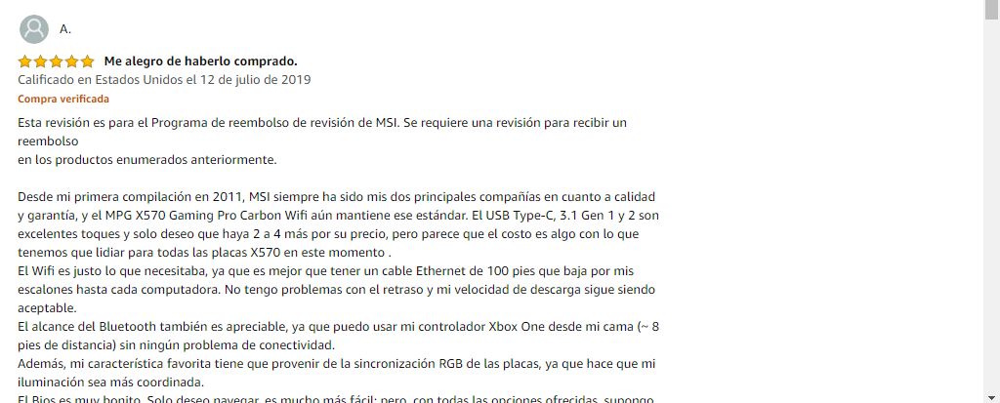
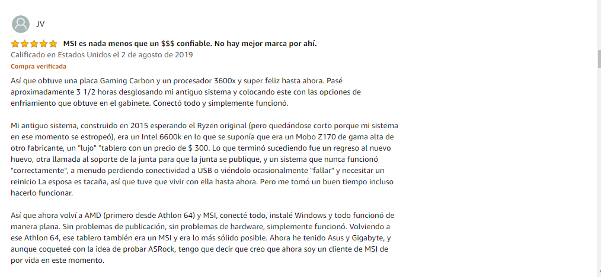

En realidad son varios que aguantan los ryzen 3000 series, ryzen threadripper, que son realmente potentes a cambio de Intel no tiene lo suyo pero el tiempo lo determinara todo, tampoco intel se queda atrás pero igual tiene lo suyo porque los 2 van batallando. Pero como en este artículo hablamos de las motherboard y no de los procesadores. Somos una empresa que hablamos este tipo de temas si quieres que compartamos estos conocimientos respecto a procesadores puedes seguirnos en Facebook o enviarnos un mensaje.
Literalmente tampoco es que sea algo tan monstruoso si no que tiene características muy buenas para aquellos gamers que desean tarjeta madres así. Sinceramente de paso que aguanta estos tipos de procesadores nos podemos guiar que la mpg b550 gaming carbon wifi no solo aguanta los procesadores más calientes que puedas comprar(metafóricamente hablando), (Como los ryzen de segunda y tercera generación) (a cambio si hacemos una comparación de precio es alto, pero hay otra algo similar a esta MSI MPG X570 GAMING PLUS) a cambio la mpg b550 gaming carbon wifi este alrededor de 270 $ dólares, y claro esta es mucha mejor por sus características pero aquí está el link y ustedes mismo comparen sus características.
Sinceramente aquí TECNO EXPAND te podrá decir cualquier opinión pero lo que realmente hace que esto valga la pena son las opiniones de los usuarios que lo han comprado y probado, así que, aquí te dejaré una lista de opinión en Amazon.Opiniones
 Como verás las opiniones son muy buenas.
SOCKET AM4
Gracias por llegar hasta aquí eso quiere decir que te interés la tecnología asi como nosotros tenemos entonces algo en común no lo desperdicies síguenos en Facebook o en Instagram si tienes dudas de algún problema de computadora o que te ayudemos en una solución para eso estamos para ayudarte y capacitarse si es posible.
Quizas te puede interesar